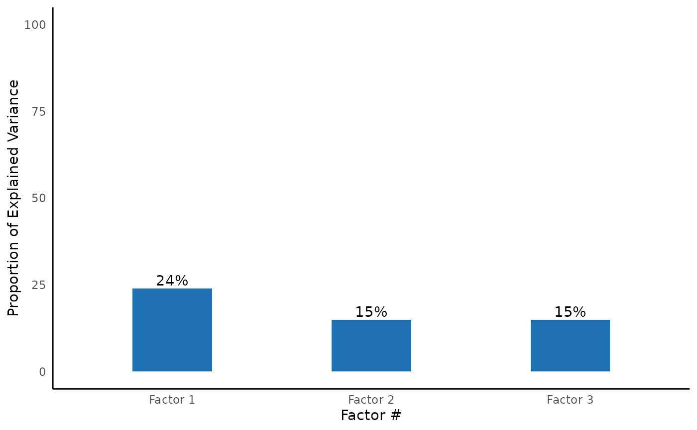

Exploratory Factor Analysis
efa_summary.Rd![[Stable]](figures/lifecycle-stable.svg)
The function is used to fit a exploratory factor analysis model. It will first find the optimal number of factors using parameters::n_factors. Once the optimal number of factor is determined, the function will fit the model using
psych::fa(). Optionally, you can request a post-hoc CFA model based on the EFA model which gives you more fit indexes (e.g., CFI, RMSEA, TLI)
efa_summary(
data,
cols,
rotation = "varimax",
optimal_factor_method = FALSE,
efa_plot = TRUE,
digits = 3,
n_factor = NULL,
post_hoc_cfa = FALSE,
quite = FALSE,
streamline = FALSE,
return_result = FALSE
)Arguments
- data
data frame
- cols
columns. Support
dplyr::select()syntax.- rotation
the rotation to use in estimation. Default is 'oblimin'. Options are 'none', 'varimax', 'quartimax', 'promax', 'oblimin', or 'simplimax'
- optimal_factor_method
Show a summary of the number of factors by optimization method (e.g., BIC, VSS complexity, Velicer's MAP)
- efa_plot
show explained variance by number of factor plot. default is
TRUE.- digits
number of digits to round to
- n_factor
number of factors for EFA. It will bypass the initial optimization algorithm, and fit the EFA model using this specified number of factor
- post_hoc_cfa
a CFA model based on the extracted factor
- quite
suppress printing output
- streamline
print streamlined output
- return_result
If it is set to
TRUE(default isFALSE), it will return afaobject frompsych
Value
a fa object from psych
Examples
efa_summary(lavaan::HolzingerSwineford1939, starts_with("x"), post_hoc_cfa = TRUE)
#>
#>
#>
#> Model Summary
#> Model Type = Exploratory Factor Analysis
#> Optimal Factors = 3
#>
#> Factor Loadings
#> ────────────────────────────────────────────────────────────────
#> Variable Factor 1 Factor 3 Factor 2 Complexity Uniqueness
#> ────────────────────────────────────────────────────────────────
#> x1 0.613 1.539 0.523
#> x2 0.494 1.093 0.745
#> x3 0.660 1.084 0.547
#> x4 0.832 1.104 0.272
#> x5 0.859 1.043 0.246
#> x6 0.799 1.167 0.309
#> x7 0.709 1.062 0.481
#> x8 0.699 1.131 0.480
#> x9 0.415 0.521 2.046 0.540
#> ────────────────────────────────────────────────────────────────
#>
#>
#> Explained Variance
#> ─────────────────────────────────────────────────────
#> Var Factor 1 Factor 3 Factor 2
#> ─────────────────────────────────────────────────────
#> SS loadings 2.187 1.342 1.329
#> Proportion Var 0.243 0.149 0.148
#> Cumulative Var 0.243 0.392 0.540
#> Proportion Explained 0.450 0.276 0.274
#> Cumulative Proportion 0.450 0.726 1.000
#> ─────────────────────────────────────────────────────
#>
#>
#> EFA Model Assumption Test:
#> OK. Bartlett's test of sphericity suggest the data is appropriate for factor analysis. χ²(36) = 904.097, p < 0.001
#> OK. KMO measure of sampling adequacy suggests the data is appropriate for factor analysis. KMO = 0.752
#>
#> KMO Measure of Sampling Adequacy
#> ────────────────────
#> Var KMO Value
#> ────────────────────
#> Overall 0.752
#> x1 0.805
#> x2 0.778
#> x3 0.734
#> x4 0.763
#> x5 0.739
#> x6 0.808
#> x7 0.593
#> x8 0.683
#> x9 0.788
#> ────────────────────
#>

#>
#> Post-hoc CFA Model Summary
#>
#> Fit Measure
#> ─────────────────────────────────────────────────────────────────────────────────────
#> Χ² DF P CFI RMSEA SRMR TLI AIC BIC BIC2
#> ─────────────────────────────────────────────────────────────────────────────────────
#> 85.306 24.000 0.000 *** 0.931 0.092 0.065 0.896 7517.490 7595.339 7528.739
#> ─────────────────────────────────────────────────────────────────────────────────────
#>
#>
#> Factor Loadings
#> ────────────────────────────────────────────────────────────────────────────────
#> Latent.Factor Observed.Var Std.Est SE Z P 95% CI
#> ────────────────────────────────────────────────────────────────────────────────
#> Factor.1 x4 0.852 0.023 37.776 0.000 *** [0.807, 0.896]
#> x5 0.855 0.022 38.273 0.000 *** [0.811, 0.899]
#> x6 0.838 0.023 35.881 0.000 *** [0.792, 0.884]
#> Factor.3 x1 0.772 0.055 14.041 0.000 *** [0.664, 0.880]
#> x2 0.424 0.060 7.105 0.000 *** [0.307, 0.540]
#> x3 0.581 0.055 10.539 0.000 *** [0.473, 0.689]
#> Factor.2 x7 0.570 0.053 10.714 0.000 *** [0.465, 0.674]
#> x8 0.723 0.051 14.309 0.000 *** [0.624, 0.822]
#> x9 0.665 0.051 13.015 0.000 *** [0.565, 0.765]
#> ────────────────────────────────────────────────────────────────────────────────
#>
#>
#> Goodness of Fit:
#> Warning. Poor χ² fit (p < 0.05). It is common to get p < 0.05. Check other fit measure.
#> OK. Acceptable CFI fit (CFI > 0.90)
#> Warning. Poor RMSEA fit (RMSEA > 0.08)
#> OK. Good SRMR fit (SRMR < 0.08)
#> Warning. Poor TLI fit (TLI < 0.90)
#> OK. Barely acceptable factor loadings (0.4 < some loadings < 0.7)